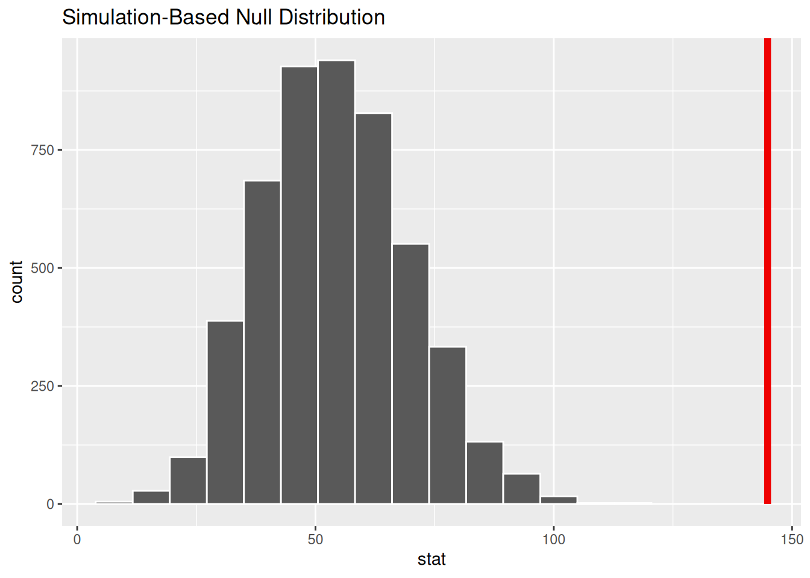

We are 90% confident that the true weight of penguins is between 3602 and 3811.
You try: Hypothesis testing on a single mean
Awesome Auto data set. 𝑛 = 5, \(\bar{x}\)= 14600, and \(s_x\)= 7765.31. Suppose you hear that the Awesome Auto dealership typically sells cars for 18000. You decide to test this claim.
Write the hypotheses in symbols.
Check conditions, then calculate the test statistic, 𝑇 , and the associated degrees of freedom.
Find and interpret the p-value in this context.
What is the conclusion of the hypothesis test when using 𝛼 = 0.05?
# give info belowx_bar =14600mu =18000s_x =7765.31n =5# test statistictest_stat = (x_bar - mu)/(s_x/sqrt(n))# Find pvalue2*pt(q=test_stat, df=4)
[1] 0.3829896
Conclusion
With a large p value we find no evidence that the prices at Awesome Auto average 18000.
We could never verify that the underlying data was normal.
The t.test()
R, of course, can make this test easy if you are working from a vector of values (x) (instead of sample statistics, like above). You will do this on occasion in your homework.
You can also take the time to have R calculate the mean and standard deviation, but t.test() is fine.
One Sample t-test
data: awesome_auto
t = -0.97905, df = 4, p-value = 0.383
alternative hypothesis: true mean is not equal to 18000
95 percent confidence interval:
4958.097 24241.903
sample estimates:
mean of x
14600
You try: Another one with t.test()
The 2017 Toyota Prius Prime has a MPG_e = 54. Consider the prius_mpg data set in the openintro package.
Test the hypothesis that the actual MPG is greater than 54.
Consider Conditions, but do the test either way and we’ll discuss conditions afterwards.
Hint: use prius_mpg$_____ to take just one column from the data.
My output
library(tidyverse)library(openintro)
Loading required package: airports
Loading required package: cherryblossom
Loading required package: usdata
t.test(x=prius_mpg$average_mpg, alternative ="greater", mu =54)
One Sample t-test
data: prius_mpg$average_mpg
t = 5.757, df = 18, p-value = 9.304e-06
alternative hypothesis: true mean is greater than 54
95 percent confidence interval:
117.4944 Inf
sample estimates:
mean of x
144.8632
prius_randomization |>visualise()+shade_p_value(obs_stat = x_bar, direction ="greater")

prius_randomization |>get_pvalue(obs_stat = x_bar, direction ="greater")
Warning: Please be cautious in reporting a p-value of 0. This result is an approximation
based on the number of `reps` chosen in the `generate()` step.
ℹ See `get_p_value()` (`?infer::get_p_value()`) for more information.